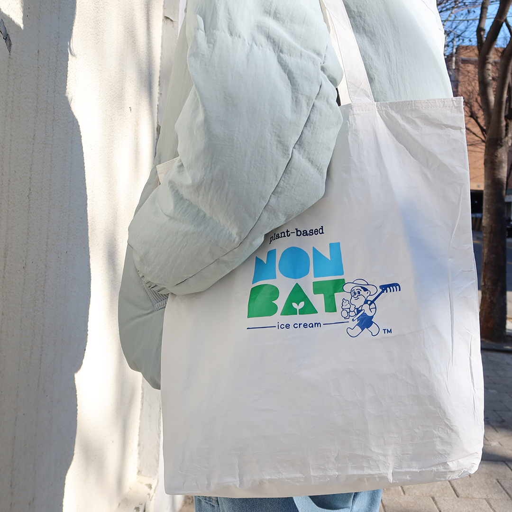

논밭 은 세상에 나온 지 얼마 안 된 비건 아이스크림 브랜드에요. 그런데 왜?? 비건 아이스크림 브랜드가 엽서를 만들고 에코백을 만드는지 궁금하실 거예요.
처음 브랜드를 만들고 생각한 것 중 하나가 지구와 관련된 일을 쉽고 재미있게 알리자!!! 였어요.

이렇게 얘기하면 진지하게 들어 주는 사람들도 있지만 다들 그때뿐인 경우가 많았어요.
지구 환경의 문제는 한 번에 해결되는 것이 아니라 우리 삶 속에 들어와 있는 자연 친화 기업의 제품을 소비하고 지지하는 것이 효과적인 방법의 하나라는 것을 알게 됐죠.
그래서 지구와 관련된 일들을 알리고 작게는 예쁘고 좋은 것을 만들어서 많은 서포터분과 나누고픈 소박한 꿈을 가진 브랜드, 논밭을 만들었어요.